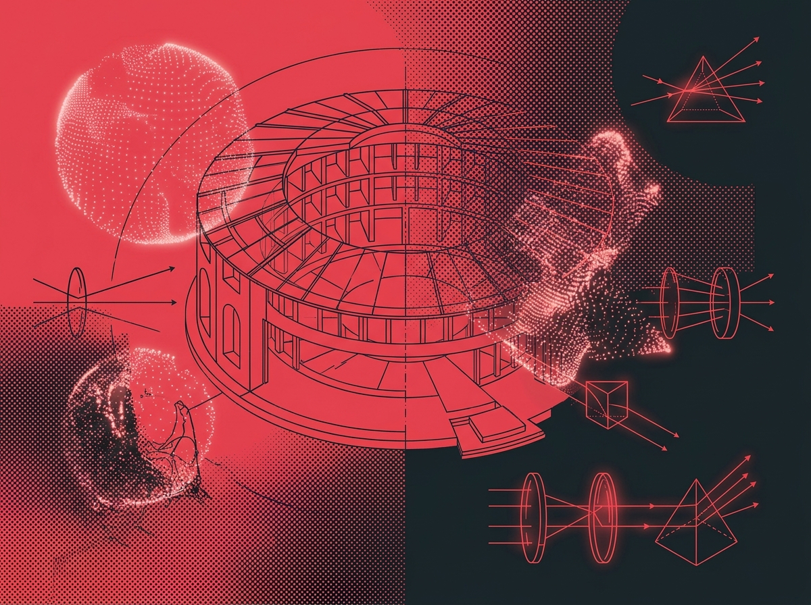

[FORMAT: ESSAY]
[MODE: DARK]
[VECTOR_DIM: 1536]

TOPIC: AI PERCEPTION, CULTURE & REPRESENTATION
Foucault in the Latent Space: Biopolitics of Vector Embeddings
How continuous dimensional representation reconfigures surveillance, categorization, and the discipline of high-dimensional bodies.